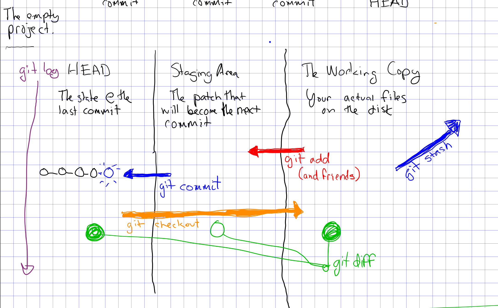
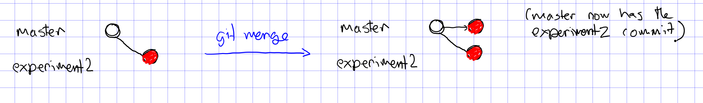
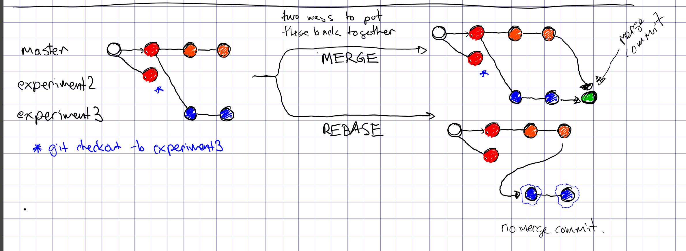
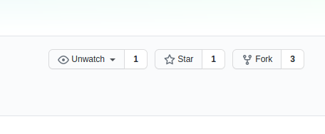

Git Zero to Hero
Table of Contents
- 1. About These Notes
- 2. Git
- 3. Git Concepts
- 4. The Big Idea
- 5. `git status` and Three Things in your Head
- 6. Let's make some commits.
- 7. git diff
- 8. Branches, Merges and Rebases
- 9. Merge
- 10. Conflicts and Rebase
- 11. Detached Head State and Commit Ids
- 12. Resolving Conflicts
- 13. git commit ammend
- 14. Remotes
- 15. Remotes and Branches
- 16. Don't pull
- 17. the fetch/rebase pattern
- 18. Forks and Pull Requests
1 About These Notes
Today's lecture really is a continuous narrative, so we're going to follow along with my notes rather than use a slide deck.
2 Git
- The most commonly used version control system in the world.
- Among the most powerful.
- The most important tool you can learn in this class.
Git, when used properly, gives you total control over the history of your work combined with excellent tools for collaboration.
Stop thinking of your project as "this code". Your project is the git repository.
Never name files or functions "v1" "v2" "v3" etc. Just let git manage history and versions for you.
3 Git Concepts
3.1 diff and patch

Clear our temporary directory.
rm -rf /tmp/example mkdir /tmp/example
Create two similar files.
cat << EOF > filev1.txt This is a file I'm using as an example for a presentation. While git is the most common version control system, it may not be the most powerful. That distinction goes to Darcs. EOF cat << EOF > filev2.txt This is a file we are using as an example for a presentation. While git is the most common version control system, it may not be the most powerful. That distinction goes to Pijul. EOF diff -u filev1.txt filev2.txt | cat
--- filev1.txt 2020-09-02 15:44:32.587073923 -0400 +++ filev2.txt 2020-09-02 15:44:32.591073924 -0400 @@ -1,6 +1,7 @@ -This is a file I'm using as +This is a file we are using as an example for a presentation. -While git is the most common version control -system, it may not be the most powerful. +While git is the most common version +control system, it may not be the +most powerful. -That distinction goes to Darcs. +That distinction goes to Pijul.
That is, diff takes two files which are similar and returns a "patch" which is a set of instructions for converting one file into another.
diff -u filev1.txt filev2.txt > the-patch patch -o filev2-from-patch.txt < the-patch cat filev2-from-patch.txt
patching file filev2-from-patch.txt (read from filev1.txt)
This is a file we are using as
an example for a presentation.
While git is the most common version
control system, it may not be the
most powerful.
That distinction goes to Pijul.
Naturally the difference between `filev2-from-patch` and `filev2` is the empty diff.
diff -u filev2-from-patch filev2 | cat
4 The Big Idea
Your project is a chain of patches:
5 `git status` and Three Things in your Head

- The Branch HEAD
- The Staging Area
- The Working Copy
rm * git init git status
Initialized empty Git repository in /tmp/example/.git/ On branch master No commits yet nothing to commit (create/copy files and use "git add" to track)
6 Let's make some commits.
cat << EOF > README.md About ===== This is an example of a git repository. EOF git status
On branch master No commits yet Untracked files: (use "git add <file>..." to include in what will be committed) README.md nothing added to commit but untracked files present (use "git add" to track)
This is a little bit of a weird of a situation because we don't have any commits at all (this only happens when you have a new repo).
git add README.md
git commit -m "Initial commit."
[master (root-commit) 51efd07] Initial commit. 1 file changed, 5 insertions(+) create mode 100644 README.md
7 git diff
Let's add some changes. (Note that we can append to a file with `>>`).
cat << EOF >> README.md Using git is fun - try saying git log Or other stuff! EOF
Now we can say
git diff
diff --git a/README.md b/README.md index 56d7772..72dcade 100644 --- a/README.md +++ b/README.md @@ -3,3 +3,8 @@ About This is an example of a git repository. +Using git is fun - try saying + + git log + +Or other stuff!
"git diff" tells us the difference between the working copy and the branch HEAD (but not the differences which are staged).
git diff --stat
README.md | 5 +++++ 1 file changed, 5 insertions(+)
And
git status
On branch master Changes not staged for commit: (use "git add <file>..." to update what will be committed) (use "git checkout -- <file>..." to discard changes in working directory) modified: README.md no changes added to commit (use "git add" and/or "git commit -a")
A readable description.
8 Branches, Merges and Rebases
Branches have a HEAD. That is almost all a branch is, in the final analysis. A HEAD and some code which automatically moves the HEAD forward when you make a commit. Listing branches:
git branch -l
* master
Branches are local by default.
If you are working collaboratively with other people, feel free to create as many local branches as you want. This is particularly useful when you are getting started with git. If you are a little concerned about something, create a branch before doing it.
There are two ways to create a new branch:
git branch experiment git status
On branch master Changes not staged for commit: (use "git add <file>..." to update what will be committed) (use "git checkout -- <file>..." to discard changes in working directory) modified: README.md no changes added to commit (use "git add" and/or "git commit -a")
Note that the above creates a new branch but DOESN'T SWITCH TO IT!!
git checkout -b experiment2 git status
M README.md On branch experiment2 Changes not staged for commit: (use "git add <file>..." to update what will be committed) (use "git checkout -- <file>..." to discard changes in working directory) modified: README.md no changes added to commit (use "git add" and/or "git commit -a")
Note we've switched to the experiment2 branch.
checkout (without -b) lets us check out other branches.
git checkout master git status
M README.md On branch master Changes not staged for commit: (use "git add <file>..." to update what will be committed) (use "git checkout -- <file>..." to discard changes in working directory) modified: README.md no changes added to commit (use "git add" and/or "git commit -a")
git checkout experiment2
M README.md
Note that we can switch branches even if the working copy has changes.
9 Merge
Let's make a commit.
git add README.md
git commit -m "Extended README."
[experiment2 cafbae7] Extended README. 1 file changed, 5 insertions(+)
A simple merge:
git checkout master git merge experiment2 git log -2 | cat
Updating 51efd07..cafbae7
Fast-forward
README.md | 5 +++++
1 file changed, 5 insertions(+)
commit cafbae7484ec357e4ccc32bc6f15c38e12423d73
Author: Vincent <Vincent Toups>
Date: Wed Sep 2 15:44:32 2020 -0400
Extended README.
commit 51efd07b4b321b3e7650243b9e0d685b6320a598
Author: Vincent <Vincent Toups>
Date: Wed Sep 2 15:44:32 2020 -0400
Initial commit.

This is a "fast forward" merge - we just add each commit from experiment2 to master. Because experiment2 is based precisely on the same commit that the master branch is still on, this is a trivial operation.
10 Conflicts and Rebase
Ther power of git is how it enables distributed development: two people on different machines (or even one person on different machines or just on different branches.)
The simplest conflict is that one branch has "moved ahead" while another has done work based on a previous state.
For now, imagine we are working on an experiment on a new branch, experiment3:

We want to get the code represented by the orange commits. We could do it by merge or by rebase.
The rebase is tidier and also more polite. It presumes that master is the authoritative version of the code and thus it should be that your experiment should look like it was made on the most recent version of master possible.
git checkout -b experiment3 git status
On branch experiment3 nothing to commit, working tree clean
A simple case where there are no textual conflicts.
cat << EOF > hello.md Hi everyone! EOF git add hello.md git commit -m "Added hello.md"
[experiment3 72660e2] Added hello.md 1 file changed, 1 insertion(+) create mode 100644 hello.md
Now let's make a commit on master without merging first. This simulates master "moving on".
git checkout master cat << EOF > goodbye.md So long, everyone. EOF git add goodbye.md git commit -m "Added goodbye."
[master 6f6553e] Added goodbye. 1 file changed, 1 insertion(+) create mode 100644 goodbye.md
Now we check out experiment3 and do some experiments.
git checkout experiment3 git checkout -b experiment3-merge git merge master
Merge made by the 'recursive' strategy.
goodbye.md | 1 +
1 file changed, 1 insertion(+)
create mode 100644 goodbye.md
git log -3
commit b05d41b75ca34995b7af73a14886d233e02b441b
Merge: 72660e2 6f6553e
Author: Vincent <Vincent Toups>
Date: Wed Sep 2 15:44:33 2020 -0400
Merge branch 'master' into experiment3-merge
commit 72660e2b291fe2ee3727d5e510ff57188cb5c55c
Author: Vincent <Vincent Toups>
Date: Wed Sep 2 15:44:32 2020 -0400
Added hello.md
commit 6f6553ebecf73d36b0ffe8dc9a9ba203dd13f152
Author: Vincent <Vincent Toups>
Date: Wed Sep 2 15:44:32 2020 -0400
Added goodbye.
Note that we branched before the merge. We can get back to where we were before by checkout out experiment3.
git checkout experiment3 git checkout -b experiment-rebase git rebase master git log -3
First, rewinding head to replay your work on top of it...
Applying: Added hello.md
commit 028c3ac47c0350c3d15996bdb3bd3c69013010a7
Author: Vincent <Vincent Toups>
Date: Wed Sep 2 15:44:32 2020 -0400
Added hello.md
commit 6f6553ebecf73d36b0ffe8dc9a9ba203dd13f152
Author: Vincent <Vincent Toups>
Date: Wed Sep 2 15:44:32 2020 -0400
Added goodbye.
commit cafbae7484ec357e4ccc32bc6f15c38e12423d73
Author: Vincent <Vincent Toups>
Date: Wed Sep 2 15:44:32 2020 -0400
Extended README.
Note the absence of the merge.
Most of the time code flows back into master - this is the "canonical" version of the repository meant for things which are "really done."
The nice thing about rebase is that it allows us to do a trivial merge of the feature branch into master - the feature branch now looks like it was based on the most recent version.
git checkout master git merge experiment-rebase git log -3
Updating 6f6553e..028c3ac
Fast-forward
hello.md | 1 +
1 file changed, 1 insertion(+)
create mode 100644 hello.md
commit 028c3ac47c0350c3d15996bdb3bd3c69013010a7
Author: Vincent <Vincent Toups>
Date: Wed Sep 2 15:44:32 2020 -0400
Added hello.md
commit 6f6553ebecf73d36b0ffe8dc9a9ba203dd13f152
Author: Vincent <Vincent Toups>
Date: Wed Sep 2 15:44:32 2020 -0400
Added goodbye.
commit cafbae7484ec357e4ccc32bc6f15c38e12423d73
Author: Vincent <Vincent Toups>
Date: Wed Sep 2 15:44:32 2020 -0400
Extended README.
A "fast forward" merge doesn't create a merge commit.
Moral of the Story: Rebase when working on features. Save "merge" for genuine mergers of truly different histories.
11 Detached Head State and Commit Ids

git log
commit 028c3ac47c0350c3d15996bdb3bd3c69013010a7
Author: Vincent <Vincent Toups>
Date: Wed Sep 2 15:44:32 2020 -0400
Added hello.md
commit 6f6553ebecf73d36b0ffe8dc9a9ba203dd13f152
Author: Vincent <Vincent Toups>
Date: Wed Sep 2 15:44:32 2020 -0400
Added goodbye.
commit cafbae7484ec357e4ccc32bc6f15c38e12423d73
Author: Vincent <Vincent Toups>
Date: Wed Sep 2 15:44:32 2020 -0400
Extended README.
commit 51efd07b4b321b3e7650243b9e0d685b6320a598
Author: Vincent <Vincent Toups>
Date: Wed Sep 2 15:44:32 2020 -0400
Initial commit.
Each commit has an id.
git log | grep commit | cut -d' ' -f2
028c3ac47c0350c3d15996bdb3bd3c69013010a7 6f6553ebecf73d36b0ffe8dc9a9ba203dd13f152 cafbae7484ec357e4ccc32bc6f15c38e12423d73 51efd07b4b321b3e7650243b9e0d685b6320a598
Let's detach our head.
commit_id=$(git log | grep commit | cut -d' ' -f2 | sed '3q;d') git checkout $commit_id git status
HEAD detached at cafbae7 nothing to commit, working tree clean
You can always re-attach your head by checking out a branch (or creating a new one).
git checkout -b new-head git status git log
On branch new-head
nothing to commit, working tree clean
commit cafbae7484ec357e4ccc32bc6f15c38e12423d73
Author: Vincent <Vincent Toups>
Date: Wed Sep 2 15:44:32 2020 -0400
Extended README.
commit 51efd07b4b321b3e7650243b9e0d685b6320a598
Author: Vincent <Vincent Toups>
Date: Wed Sep 2 15:44:32 2020 -0400
Initial commit.
12 Resolving Conflicts
Conflicts occur when two commits touch the same line of code. Git can tell you about them but it can't fix them for you. Let's simulate a conflict.
git checkout master git checkout -b conflicts cat << EOF > conflicts-here.md This is a file it has some lines I hope nothing goes wrong! Perhaps it will, though. Best have a plan. EOF git add conflicts-here.md git commit -m "Added a new file."
[conflicts 313f788] Added a new file. 1 file changed, 5 insertions(+) create mode 100644 conflicts-here.md
Now on master, let's create a conflict.
git checkout master cat << EOF > conflicts-here.md This is a file it has many lines I hope nothing goes wrong! Perhaps it will, though. Best have a good plan. EOF git add conflicts-here.md git commit -m "Added a conflict file."
[master 4cf7409] Added a conflict file. 1 file changed, 5 insertions(+) create mode 100644 conflicts-here.md
We are good citizens, so we go to the conflicts branch and try to rebase on master, which has moved ahead.
git checkout conflicts # we'd usually run this # git rebase master # but since we are capturing the output in this document # we need to be a litte tricky git rebase master > rebase-report cat rebase-report rm rebase-report
First, rewinding head to replay your work on top of it... Applying: Added a new file. Using index info to reconstruct a base tree... Falling back to patching base and 3-way merge... Auto-merging conflicts-here.md CONFLICT (add/add): Merge conflict in conflicts-here.md Patch failed at 0001 Added a new file. Use 'git am --show-current-patch' to see the failed patch Resolve all conflicts manually, mark them as resolved with "git add/rm <conflicted_files>", then run "git rebase --continue". You can instead skip this commit: run "git rebase --skip". To abort and get back to the state before "git rebase", run "git rebase --abort".
To resolve this we need to look at the file:
cat conflicts-here.md
This is a file <<<<<<< HEAD it has many lines I hope nothing goes wrong! Perhaps it will, though. Best have a good plan. ======= it has some lines I hope nothing goes wrong! Perhaps it will, though. Best have a plan. >>>>>>> Added a new file.
Note that git has fused these files together and it expects us to edit it until we have the version we want.
Let's assume our version is actually better, so we keep just the bottom part:
cat << EOF > conflicts-here.md it has some lines I hope nothing goes wrong! Perhaps it will, though. Best have a plan. EOF git add conflicts-here.md git rebase --continue
Applying: Added a new file.
And that should finish the merge:
git log -3
commit 82f6404fd8253e037e901fe9db326a73938702d1
Author: Vincent <Vincent Toups>
Date: Wed Sep 2 15:44:33 2020 -0400
Added a new file.
commit 4cf7409730aa6a5a1e03c1a0e9b546e585b247da
Author: Vincent <Vincent Toups>
Date: Wed Sep 2 15:44:33 2020 -0400
Added a conflict file.
commit 028c3ac47c0350c3d15996bdb3bd3c69013010a7
Author: Vincent <Vincent Toups>
Date: Wed Sep 2 15:44:32 2020 -0400
Added hello.md
13 git commit ammend
Sometimes we want to modify the last commit. This is ok as long as we haven't pushed yet.
In this case the commit message is now a little weird - its better to say we modified the file introduced by master.
git commit --amend -m "Modified the conflicting file."
[conflicts b1014c0] Modified the conflicting file. Date: Wed Sep 2 15:44:33 2020 -0400 1 file changed, 2 insertions(+), 3 deletions(-)
Now we just need to merge our conflicts branch onto master:
git checkout master git merge conflicts
Updating 4cf7409..b1014c0 Fast-forward conflicts-here.md | 5 ++--- 1 file changed, 2 insertions(+), 3 deletions(-)
14 Remotes
Git is distributed version control. Everyone who has a git repository is in principle working alone.
`remotes` are the way git allows collaboration. Remotes have names which point to locations. By far the most common name for a remote is `origin` and that remote often points to github, though there are other services (bitbucket, gitlab). A remote can even be another directory on your computer.
You list your remotes by saying:
git remote -v
But we don't have any. We all created our git repositories locally first and then associated them with a remote on github by saying something like
# git remote add origin <some-url-at-github>
But its much more ordinary to have a remote configured for you via a clone:
(Clear any previous workspaces)
rm -rf /tmp/workspace mkdir /tmp/workspace
And in that directory:
git clone git@github.com:Vincent-Toups/bios611-project1.git
cd bios611-project1
git remote -v
origin git@github.com:Vincent-Toups/bios611-project1.git (fetch) origin git@github.com:Vincent-Toups/bios611-project1.git (push)
Note that you may also clone from an `https` link. This specifies the way you intend to interact with the remote repository. Either is fine, but if you are using ssh keys it probably will be a `git@` style url.
You can generally ignore this business of `fetch` and `push` remotes.
15 Remotes and Branches
Usually you are trying to keep synchronized with a remote branch that someone else might be working on.
When you clone a repo for the first time it automatically sets up associations between the local branches and the branches on the remote you cloned from.
Thus commands like `git push`, `git pull` and `git fetch` know what branch to look for on the remote.
16 Don't pull
You should understand `git pull` as meaning strictly "I am behind the remote and I've done nothing at all locally and I just want to get the latest commits."
In any other situation you want to do the following:
17 the fetch/rebase pattern
git fetch # grab the remote commits but don't change local branches git rebase origin/master # rebase master on origin master
18 Forks and Pull Requests
You are unlikely to need to do this in this class, but you are likely to have to do it at some point.
Conceptually, every `git clone` produces a fork. But on github and other places there is a more formal idea.

This clones the repo to your account. You can then clone it onto your computer and work on it. If you do work you think you might want to contribute back you should then do a pull request via github.
But before you do that you would need to rebase your master branch on the original repository (this is the polite thing to do in most cases).
This is a good way to see when you might have more than one remote.
cd /tmp rm -rf puff git clone git@github.com:Vincent-Toups/puff.git cd puff git remote -v
origin git@github.com:Vincent-Toups/puff.git (fetch) origin git@github.com:Vincent-Toups/puff.git (push)
Note that I've only got remotes for my copy of the repo.
I can add a second remote for the "upstream" version of the project (that is, the place I cloned from).
git remote add upstream git@github.com:VincentToups/puff.git
And then to rebase I'd say:
git fetch upstream git rebase upstream/master git push # up to my CSCC account.
And then I'd make a pull request.